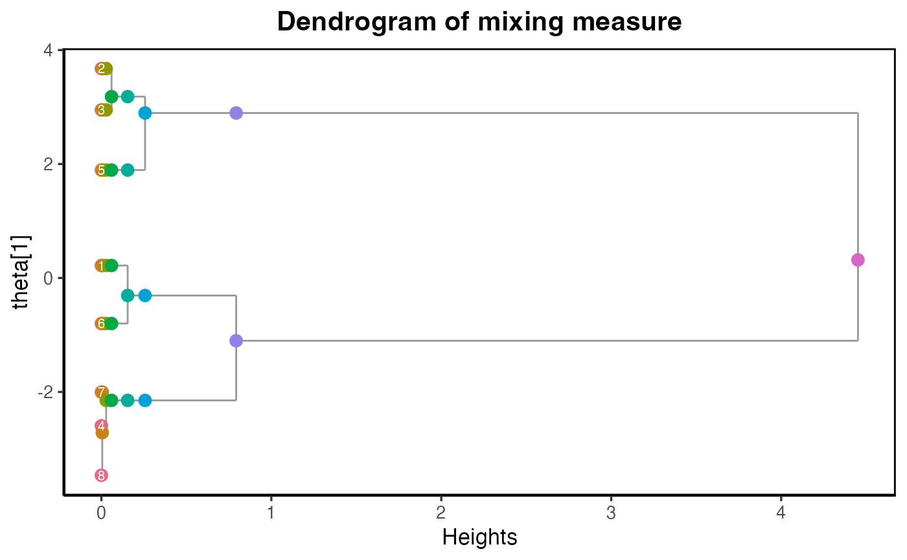

In this page, we introduce how to use dendroMix to
summarize and select mixture models via dendrograms constructed from
overfitted latent mixing measures.
Generate data and estimated parameter of the overfitted model
We firstly simulate data from the mixture of 3 univariate normal
distributions with the mixing proportions are
,
actual means are
,
and the corresponding standard deviations are
.
We then start with using an overfitted of
components and estimate the corresponding parameters using
mclust package.
set.seed(1234)
# true mixture parameters
p_true <- c(0.3, 0.4, 0.3) # mixing proportions
mu_true <- c(-2, 0, 3) # means
sd_true <- c(0.5, 1, 0.7) # standard deviations
sigma_true <- sd_true^2
# sample sizes
n = 500
z <- sample(1:3, size = n, replace = TRUE, prob = p_true)
X <- rnorm(n, mean = mu_true[z], sd = sd_true[z])
# visualization
# Create grid for density curves
dat <- data.frame(X = X)
# plotting grid
xgrid <- seq(min(X) - 1, max(X) + 1, length.out = 800)
# component densities *weighted by p*
dens_comp <- crossing(x = xgrid, comp = factor(c("1","2","3"))) |>
mutate(mu = mu_true[as.integer(comp)],
sd = sd_true[as.integer(comp)],
p = p_true[as.integer(comp)],
density = p * dnorm(x, mu, sd))
# total mixture density
dens_total <- dens_comp |>
group_by(x) |>
summarise(density = sum(density), .groups = "drop")
# sensible histogram binwidth (Freedman–Diaconis)
bw <- 2 * IQR(X) / length(X)^(1/3)
ggplot() +
geom_line(data = dens_total, aes(x = x, y = density), linewidth = 1.2) +
geom_line(data = dens_comp, aes(x = x, y = density, color = comp),
linewidth = 1, linetype = "dashed") +
scale_color_manual(
name = "Component",
values = c(`1` = "#E41A1C", `2` = "#377EB8", `3` = "#4DAF4A")
) +
labs(title = "Gaussian Mixture Model (True Density Overlay)", x = "X", y = "Density") +
theme_minimal()
K = as.integer(8)
fit <- Mclust(X, G = K, modelNames = "V",
initialization = list(hcPairs = hc(X), nstart=50),
control = emControl(itmax=1000, eps=1e-10))
p_hat = fit$parameters$pro
mus_hat = fit$parameters$mean
sigmas_hat = fit$parameters$variance$sigmasqRunning dendroMix and visualizing the output
Given the output from mclust, we are ready to construct
the dendrogram of mixing measures via dendroMix.
dmm = dendrogram_mixing(ps = p_hat,
thetas = mus_hat,
sigmas = sigmas_hat)
plot_dendrogram_mixing(dmm, main ="Dendrogram of mixing measure")
The dendrogram plot shows the evidence of 3 Gaussian disstributions here. We can extract the dendrogram estimated parameters at this level.
#> [1] "The dendrogram estimated parameters at level k = 3"
#> [1] "Estimated mixing proportions:"
#> [1] 0.3666748 0.3550977 0.2782276
#> [1] "Estimated means:"
#> 1 2 4
#> -0.3073676 2.8953948 -2.1485151
#> [1] "Estimated sigma:"
#> [1] 0.5613664 0.6085194 0.2140256
p_hat = dmm$Gs[[K - 3 + 1]]$ps
mu_hat = dmm$Gs[[K - 3 + 1]]$thetas
sd_hat = dmm$Gs[[K - 3 + 1]]$sigmas
mix_components_df <- function(p, mu, sd, xgrid, label) {
stopifnot(length(p) == length(mu), length(mu) == length(sd))
K <- length(p)
tibble(
x = rep(xgrid, each = K),
comp = factor(rep(seq_len(K), times = length(xgrid))),
density = as.vector(sapply(seq_len(K), function(k) p[k] * dnorm(xgrid, mu[k], sd[k]))),
model = label
)
}
mix_total_df <- function(components_df) {
components_df |>
group_by(x, model) |>
summarise(density = sum(density), .groups = "drop")
}
## ---- optional: align components by mean to mitigate label switching ----
align_by_mean <- function(p, mu, sd) {
o <- order(mu)
list(p = p[o], mu = mu[o], sd = sd[o])
}
## ---- build plotting data ----
# Grid
xgrid <- seq(min(X) - 1, max(X) + 1, length.out = 800)
# (Optional) Align both sets for cleaner visual comparison
# If you don't have true params, skip the "true" part.
if (exists("p_true")) {
true <- align_by_mean(p_true, mu_true, sd_true)
comp_true <- mix_components_df(true$p, true$mu, true$sd, xgrid, "True")
total_true <- mix_total_df(comp_true)
}
hat <- align_by_mean(p_hat, mu_hat, sd_hat)
comp_hat <- mix_components_df(hat$p, hat$mu, hat$sd, xgrid, "Estimated")
total_hat <- mix_total_df(comp_hat)
# Combine frames that exist
comp_all <- bind_rows(if (exists("comp_true")) comp_true, comp_hat)
total_all <- bind_rows(if (exists("total_true")) total_true, total_hat)
# Sensible histogram binwidth (Freedman–Diaconis)
bw <- 2 * IQR(X) / length(X)^(1/3)
## ---- plot ----
ggplot() +
# totals (thick solid)
geom_line(data = total_all,
aes(x = x, y = density, color = model),
linewidth = 1.2) +
# components (thinner, dashed/dotted)
geom_line(data = comp_all,
aes(x = x, y = density, color = model, linetype = model,
group = interaction(model, comp)),
linewidth = 0.9) +
scale_color_manual(values = c("True" = "#377EB8", "Estimated" = "#E41A1C")) +
scale_linetype_manual(values = c("True" = "dashed", "Estimated" = "dotted")) +
labs(title = "Gaussian Mixture: True vs Estimated",
x = "X", y = "Density", color = "Model", linetype = "Model") +
theme_minimal(base_size = 14)
In this plot,
The thick solid lines (red = Estimated, blue = True) show the total mixture density — the sum of all weighted Gaussian components for each model.
-
The dashed and dotted lines correspond to the individual mixture components (each Gaussian) within the true or estimated model:
Dashed blue -> each true Gaussian component scaled by its weight.
Dotted red -> each estimated Gaussian component scaled by its estimated weight.